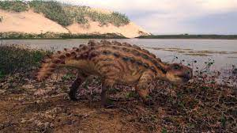

</html>
<body bgcolor= "#8bd6d9">
</tr>
</table border 19>
<h2 align= "center"> Tipos de dinosaurios Ornitrisquios (Molière) </h2>
<table align= center border 19>
<tr align= "center">
	<td><a href = 'html/Anquilosaurio.html'> <figcaption> <i>  Anquilosaurio </i> </figcaption> </a> </td>
	<td><a href = 'html/Apatosaurio.html'> <figcaption> <i> Apatosaurio </i> </figcaption> </a> </td>
	<td><a href = 'html/Coritosaurio.html'><figcaption> <i> Apatosaurio </i> </figcaption> </a> </td>
</tr>

<tr align= "center">
	<td><a href = 'html/Protoceratops.html'><figcaption> <i> Apatosaurio </i> </figcaption></a></td>
	<td><a href = 'html/Triceratops.html'><figcaption> <i> Apatosaurio </i> </figcaption></a></td>
	<td><a href = 'html/Tuojiangosaurio.html'><figcaption> <i> Apatosaurio </i> </figcaption></a></td>
</body>
</html>
